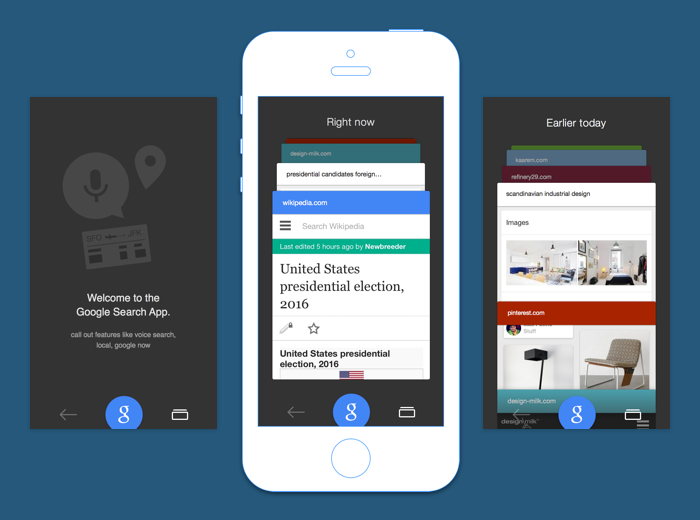
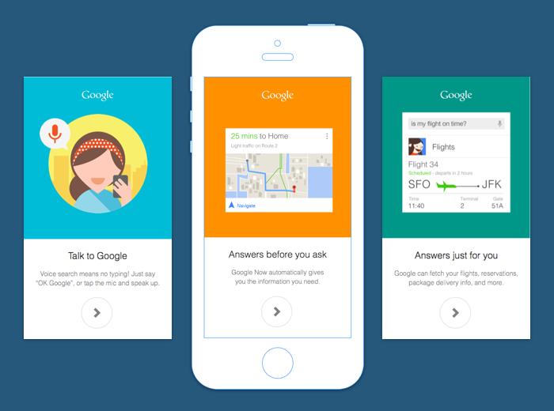
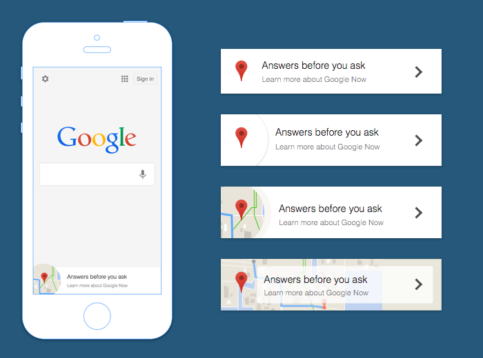

I interned at Google doing interaction design for the Google search app for iOS. Over the summer, I worked on a major app navigation redesign, a user study to evaluate different app redesigns, and a new onboarding flow.
Rethinking the app navigational model
When I first joined the team, the Google search app only allowed users to keep only one search results page and one webpage open at at a time. I assisted in a redesign intended to allow for more flexible use of the app, so that users could multitask and easily refer to multiple webpages for information.
I mocked up example interfaces for three proposed app navigational models: one that made heavy use of a Chrome-like tabs model, one that prioritized users favoriting important webpages, and one that visualized the recent history of what the user had searched for, and what webpages they visited. For each model, I produced sample user flows to assist the team in comparing and contrasting which models were most efficient to use, most simple to use, and most power-user-friendly. I also developed interactive prototypes with Framer.js to test out common user actions (swiping, favoriting) for each model.

Towards the end of the summer, as the team converged on one navigational model (shown above) I wrote a user study to evaluate the navigational models we were considering for the app. We recruited 8 participants to try out prototype apps and engage in several information-finding tasks. I wrote a study summary report and offered design recommendations on what areas of the product worked well or needed improvement.
A new material design onboarding flow
To prepare for the launch of the material design language, I designed an onboarding flow to introduce new users to some key personalization features of the Google search app. Certain features highlighted in the onboarding flow (e.g. Google Now) were intended to encourage users to sign into their Google account, so the app could provide better personalized search results and Google Now content.

A new user would swipe through all three screens when first opening the app. Existing users who hadn't used certain features (or hadn't signed into their Google accounts within the app) would be shown a small "peek" of the onboarding flow to suggest a new feature to them. I designed approaches to showing this peek on the main app screen—the design on the left is the direction the team eventually chose.

- Year Summer 2014